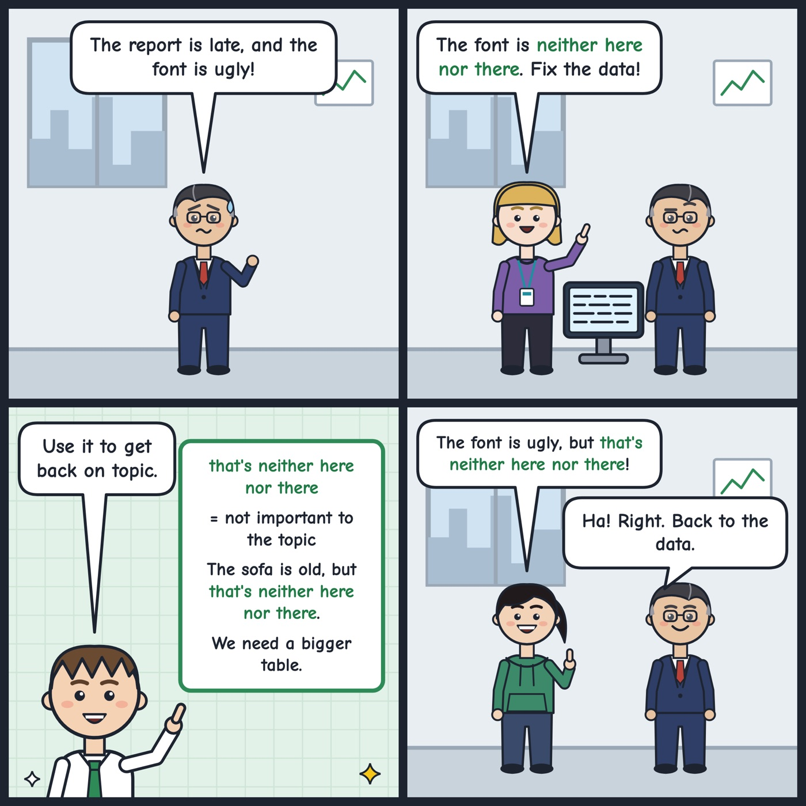

that's neither here nor there
That point is not important or not relevant to what we are discussing.
The sofa is a bit old, but that's neither here nor there. We need a bigger table.
Say 'that's neither here nor there' when a point isn't important to the main topic.

Your turn
What topic always goes 'neither here nor there' in your family chats?
What topic always goes 'neither here nor there' in your family chats?